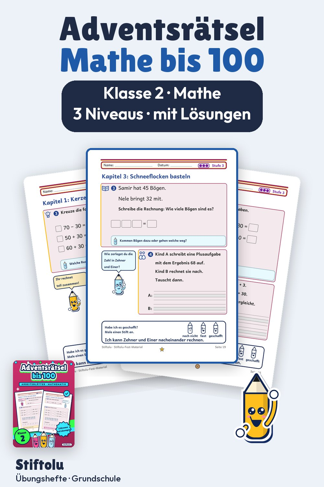

Werbung · Übungsheft von Stiftolu
Adventsrätsel Mathe: Plus und Minus bis 100 hinter 24 Türchen, Klasse 2

Jeden Tag ein Türchen: Zweitklässler rechnen Plus und Minus bis 100 und tragen den Buchstaben ein. Vier Wochen mit den Themen Kerzen, Plätzchen backen, Schneeflocken basteln und Geschenke packen reihen sich zu 44 Seiten. Am Ende jeder Woche steht ein Lösungswort, das zeigt, ob alles stimmt. Mit Lösungen und Handreichung für 3,99 € erhältlich auf eduki.